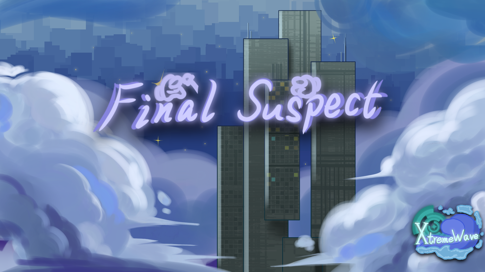

FinalSuspect 简介
Final Suspect（终极嫌疑）是 Among Us 原版的优质辅助模组，致力于为玩家带来更流畅、更丰富的游戏体验。 作为原版核心机制的深度扩展，它坚持「保留经典，优化体验」的开发理念。
功能迭代20+ 项
可调选项14 项
支持平台Steam / Epic
与原版玩家同局完全支持
01开发理念
Final Suspect 通过 20+ 项功能迭代，全面覆盖操作手感、视觉表现、 社交互动等核心场景。
从精准的操作延迟优化到沉浸式的 UI 界面重制，智能的队友行为提示， Final Suspect 不仅修复了原版长期存在的体验痛点， 更通过创意功能为多人协作注入新的活力。
无论是新手玩家的入门引导，还是资深玩家的深度自定义， 都能在这款模组中找到专属乐趣。
保留经典，优化体验
不改变原版胜负逻辑与核心玩法，只解决体验层面的摩擦。
02能力范围
操作手感延迟优化、快速启动、解锁帧率
视觉表现UI 重制、6 套主页背景、外观形象
社交互动平台信息展示、违禁词过滤、名称标识
房间治理反作弊、封禁名单与异常玩家处理
03视觉一览

模组内置 6 套可切换的主页背景，均由社区作者绘制：
04开发团队
衷心感谢为 Final Suspect 贡献代码与创意的所有开发者：
S
Slok
MOD DEVELOPER
L
LezaiYa
WEBSITE DESIGN
K
KpCam
BACKGROUND ART
小
小黄117
BACKGROUND ART
A
AIGE
BACKGROUND ART